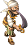
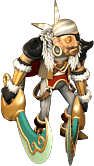
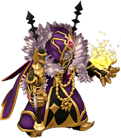
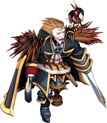

百鬼夜行
- 1～20
- 一之鬼、二之鬼、三之鬼、四之鬼、五之鬼、六之鬼、七之鬼、八之鬼、九之鬼、十之鬼、十一之鬼、十二之鬼、十三之鬼、十四之鬼、十五之鬼、十六之鬼、十七之鬼、十八之鬼、十九之鬼、二十之鬼
- 21～40
- 二十一之鬼、二十二之鬼、二十三之鬼、二十四之鬼、二十五之鬼、二十六之鬼、二十七之鬼、二十八之鬼、二十九之鬼、三十之鬼、三十一之鬼、三十二之鬼、三十三之鬼、三十四之鬼、三十五之鬼、三十六之鬼、三十七之鬼、三十八之鬼、三十九之鬼、四十之鬼
- 41～60
- 四十一之鬼、四十二之鬼、四十三之鬼、四十四之鬼、四十五之鬼、四十六之鬼、四十七之鬼、四十八之鬼、四十九之鬼、五十之鬼、五十一之鬼、五十二之鬼、五十三之鬼、五十四之鬼、五十五之鬼、五十六之鬼、五十七之鬼、五十八之鬼、五十九之鬼、六十之鬼
- 61～80
- 六十一之鬼、六十二之鬼、六十三之鬼、六十四之鬼、六十五之鬼、六十六之鬼、六十七之鬼、六十八之鬼、六十九之鬼、七十之鬼、七十一之鬼、七十二之鬼、七十三之鬼、七十四之鬼、七十五之鬼、七十六之鬼、七十七之鬼、七十八之鬼、七十九之鬼、八十之鬼
- 81～100
- 八十一之鬼、八十二之鬼、八十三之鬼、八十四之鬼、八十五之鬼、八十六之鬼、八十七之鬼、八十八之鬼、八十九之鬼、九十之鬼、九十一之鬼、九十二之鬼、九十三之鬼、九十四之鬼、九十五之鬼、九十六之鬼、九十七之鬼、九十八之鬼、九十九之鬼、百之鬼
屠宰場
- 屠宰場
- 瘋狂普羅布、瘋狂普羅德、狂亂迪斯、狂亂迪斯特、癲狂札德、癲狂札斯特
雷皮恩獵人
- 海賊村港口停泊場

雷皮恩追擊員、雷皮恩獵師- 雷皮恩戰艦內
- 舵手席爾瓦、奴隸長卡爾
- 雷皮恩戰艦甲板
- 舵手席爾瓦、

甲板長雷克斯 - 雷皮恩戰艦通道
- 一等航海士寇奇
- 雷皮恩戰艦船長室

魔法師拉斯姆、
船長拉爾普- 雷皮恩戰艦密室
- 瘋狂普羅布、瘋狂普羅德、狂亂迪斯、狂亂迪斯特、癲狂札德、癲狂札斯特